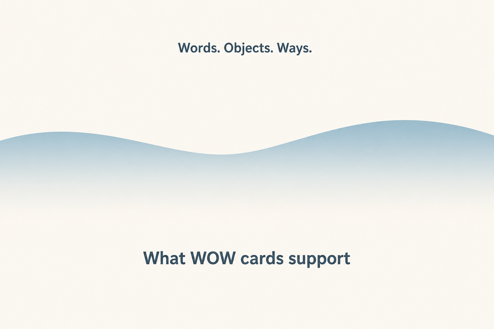
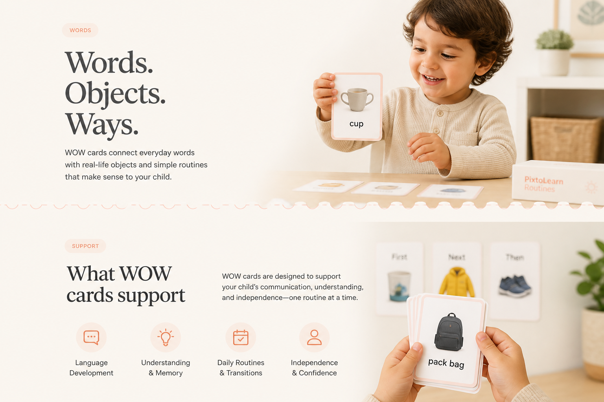
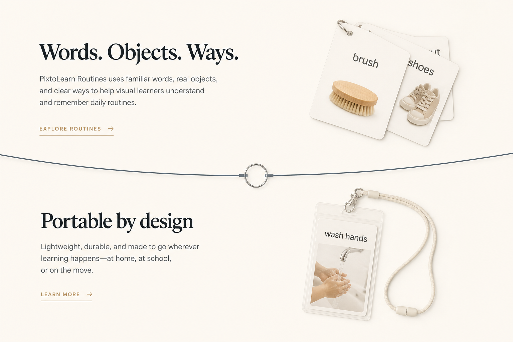

1 · Soft curves — live divider (same craft as swimming)
The WOW concept
One system for clearer tasks — shown here with brushing teeth.
Outcomes
Visible sequences for mornings, care, and daily living.
Closest to swimming. Calm slate → cream fade.

2 · Card edge — live divider
The WOW concept
One system for clearer tasks — shown here with brushing teeth.
Outcomes
Visible sequences for mornings, care, and daily living.
Perforated strip — reads like a physical WOW card edge.

3 · Lanyard line — live divider
The WOW concept
One system for clearer tasks — shown here with brushing teeth.
Portable by design
Small enough for daily life. Clear enough for the moment that matters.
Thin cord + ring — lightest, ties to Portable.
